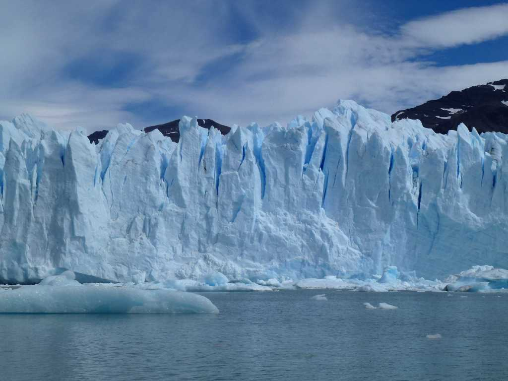
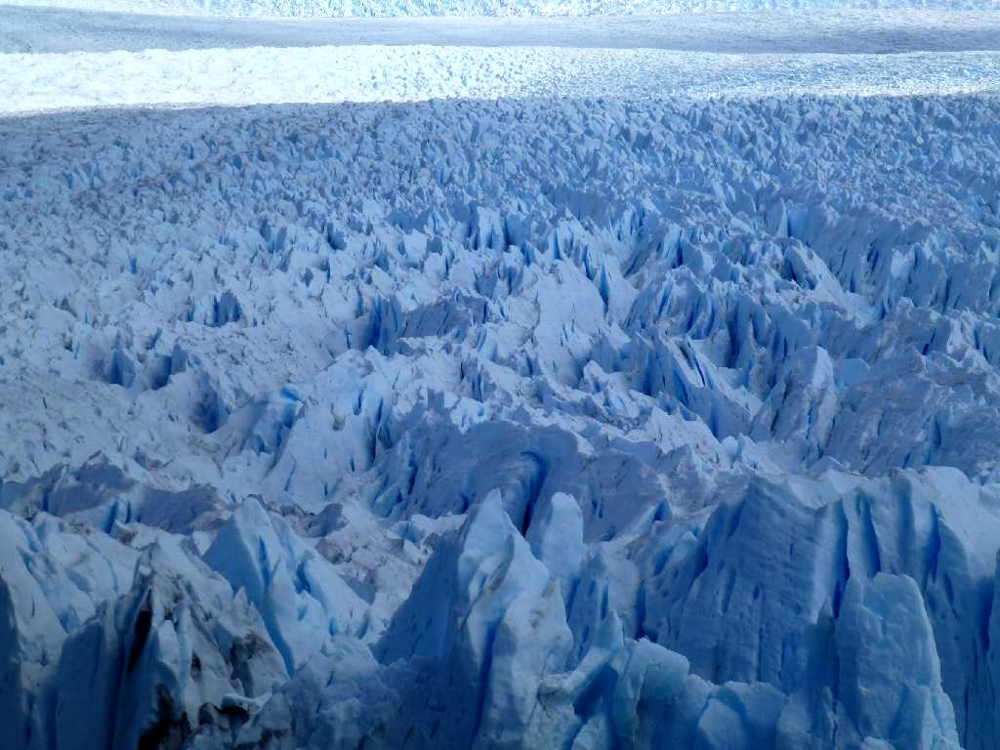
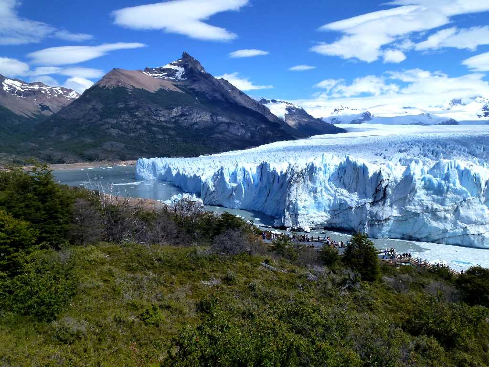
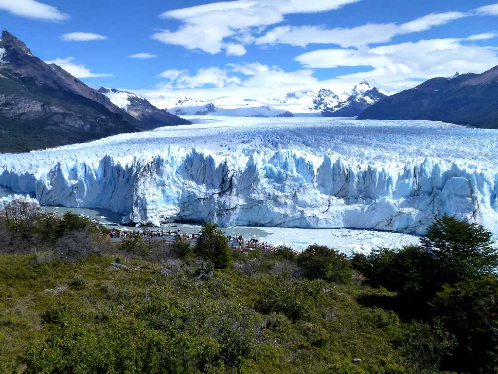
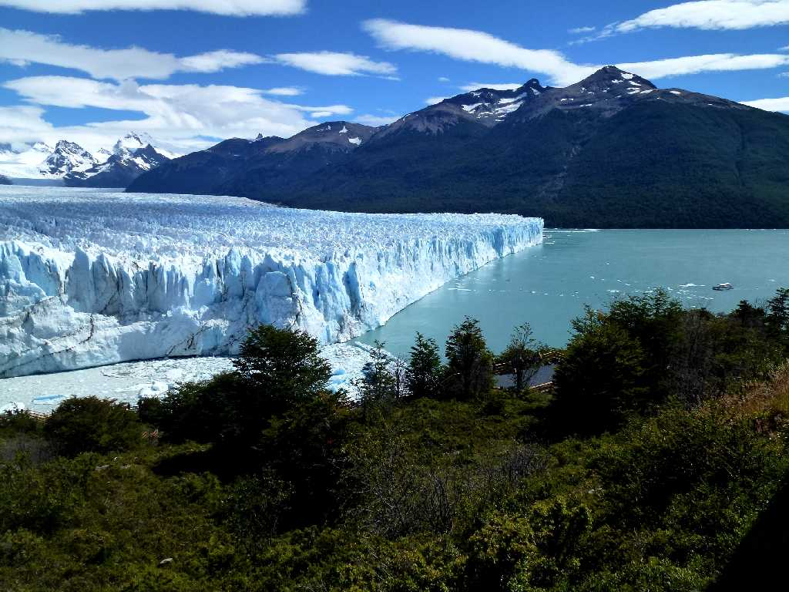
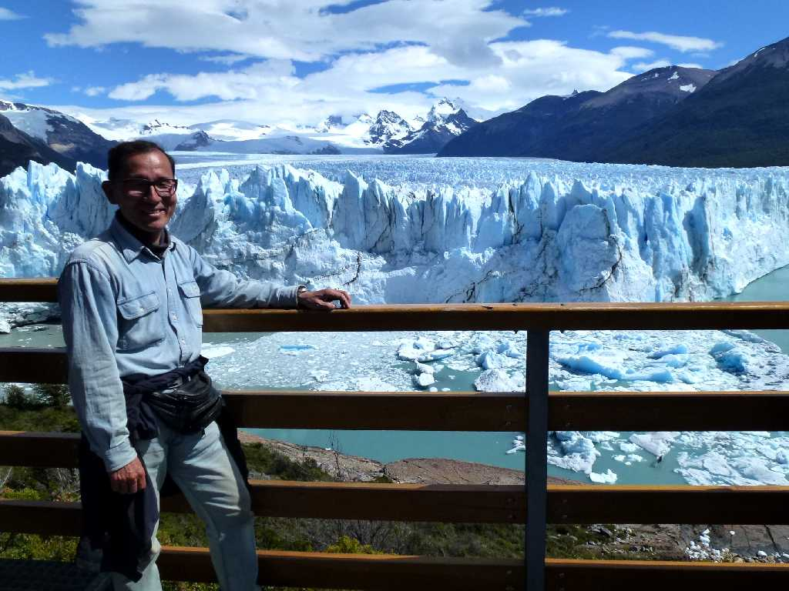

Glaciar Perito Moreno Parque Nacional Los Glaciares
南極グリーンランドに次ぐ世界第三の氷河群のロスグラシアス国立公園

Glaciar Perito Moreno Parque Nacional Los Glaciares
平均高さ６０ｍ幅５ｋｍ長さ３５ｋｍのペリトモレノ氷河は１日最大２ｍの速度で氷が流れている

South Glaciar Perito Moreno Parque Nacional Los Glaciares

West Glaciar Perito Moreno Parque Nacional Los Glaciares

North Glaciar Perito Moreno Parque Nacional Los Glaciares

February 15 2014 Glaciar Perito Moreno